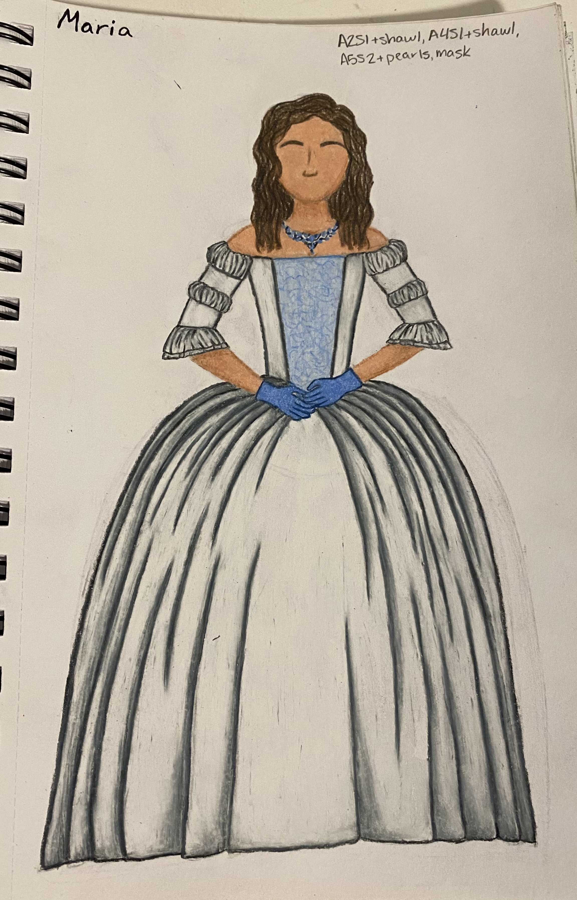

Design Work
Love's Labour's Lost by William Shakespeare
May 2021
Florence-Carlton Shakespeare Company
Directed by DK Schmidt
 "King Ferdinand"
"King Ferdinand"
King of Navarre
 "Berowne"
"Berowne"
Lord to King Ferdinand
 "Longaville"
"Longaville"
Lord to King Ferdinand
"Don Adriano De Armado"
Fantastical Spaniard hired by the King to entertain himself and his lords
"Princess of France"
The unnamed Princess of France
"Rosaline"
Lady attending the Princess of France

"Maria"
Lady attending the Princess of France
 "Boyet"
"Boyet"
Lord attending the Princess of France
"Holofernes"
A learned and pompous schoolmaster
About
Here will be a description of the important aspects of the costume design I made.